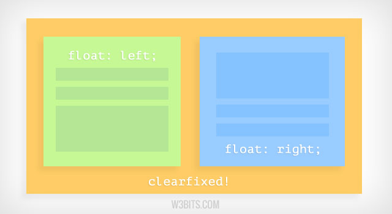
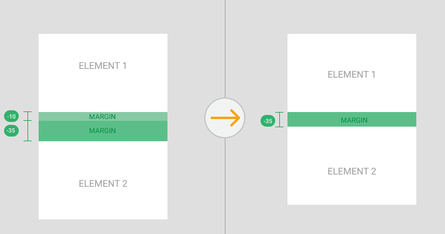

- What is a box model in CSS. And box-sizing property definition
Example of box-model:

A box model in CSS refers to the way elements are structured and rendered on a web page. It consists of content, padding, border, and margin. The box-sizing property is used to control how these components affect the overall size and layout of an element. The box-sizing property can have two values:
- "content-box" (default): The width and height of an element only include the content, and any padding and border are added to the total width and height.
- "border-box": The width and height of an element include the content, padding, and border, so the specified width and height values set the size of the entire element.
- What is a “clearfix hack” and when does it need to be applied
Clearfix example
The "clearfix hack" is a technique used to clear the float property of elements and ensure proper layout and positioning. It is needed when elements within a container are floated, which can cause the container to collapse and not take up the expected space. By applying a clearfix hack, typically using CSS pseudo-elements or clearfix classes, the container expands to include the floated elements and maintains its intended height.
- What is a “margin collapse” and what are the use cases for margin: auto and negative margin values
Margin collapse:
Margin collapse is a behavior in CSS where the vertical margins of adjacent elements collapse or combine into a single margin. This occurs when the top margin of a block-level element and the bottom margin of its preceding sibling overlap. Margin collapse has various use cases, such as creating consistent spacing between elements and collapsing margins to avoid excessive space.
Margin: auto is used to horizontally center an element within its container by automatically distributing equal margins on the left and right sides.
Negative margin values can be used to create overlapping or spacing effects by pulling an element outside of its normal flow or shifting it relative to its position.
- What was the problem with achieving Holy Grail layout
HolyGrail examples:


The problem with achieving the Holy Grail layout was creating a web page layout with a header, footer, and three columns, where the center column had a fluid width and could expand or contract based on the available space. The challenge was to accomplish this while keeping the HTML structure semantically meaningful and maintaining cross-browser compatibility.
- What are the modern ways to achieve Holy Grail layout
Modern ways to achieve the Holy Grail layout include using CSS Grid Layout or Flexbox. CSS Grid Layout provides a powerful grid system that allows precise control over the layout of elements in both rows and columns. Flexbox is a one-dimensional layout model that enables flexible and responsive positioning of elements within a container, making it well-suited for creating the Holy Grail layout. Both CSS Grid and Flexbox provide more efficient and flexible solutions compared to traditional methods like using floats and positioning.